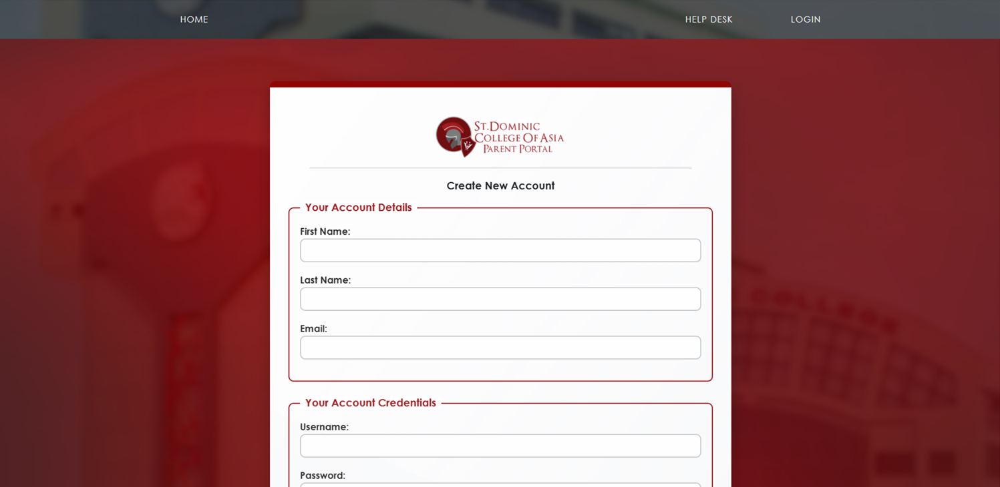
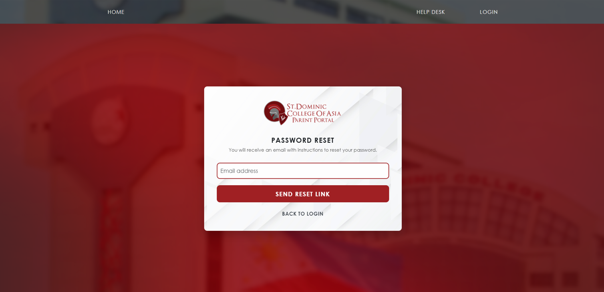
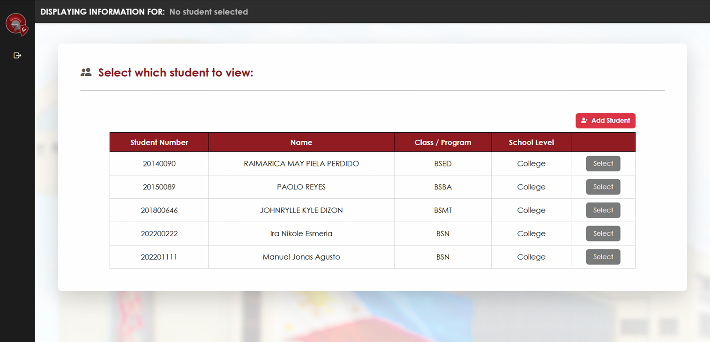
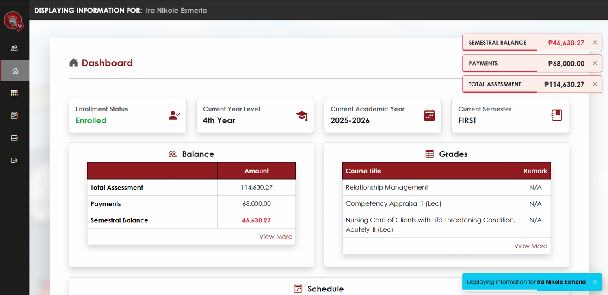
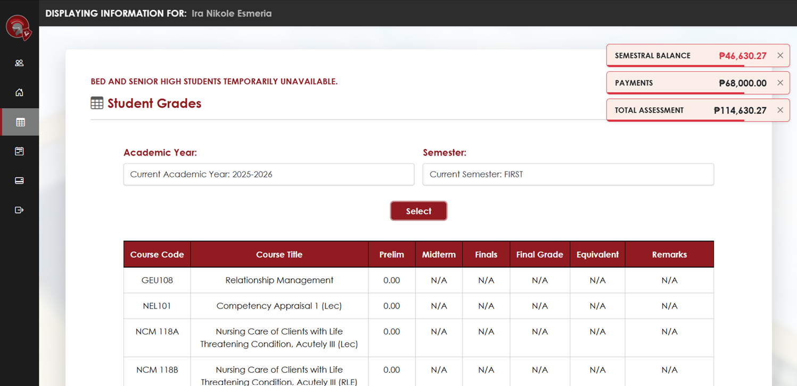
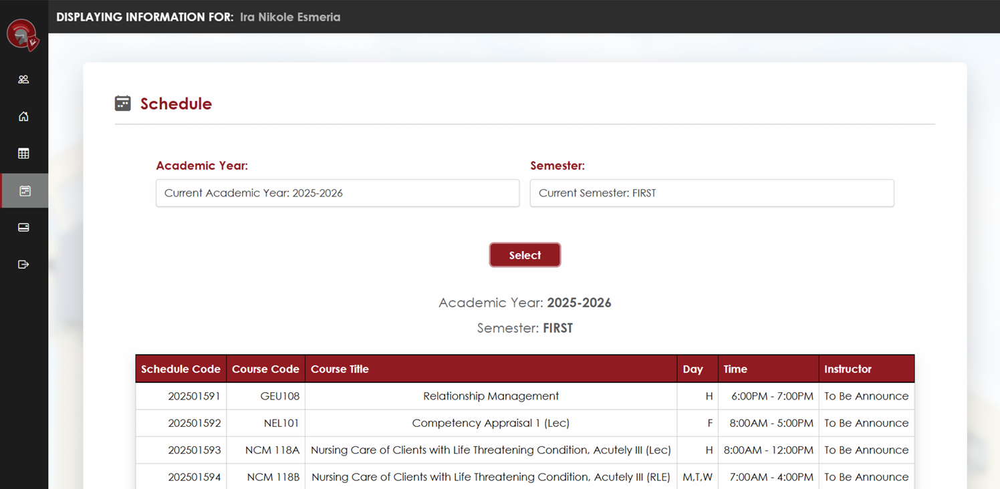
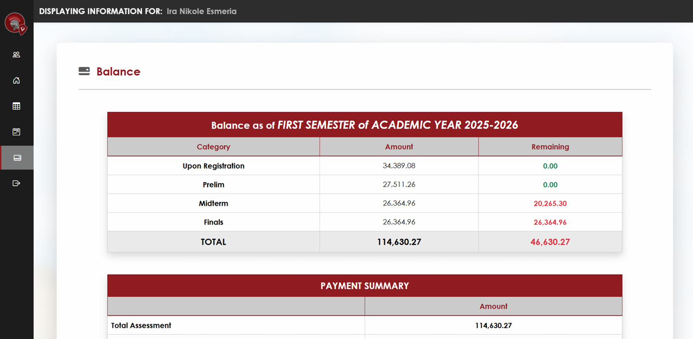
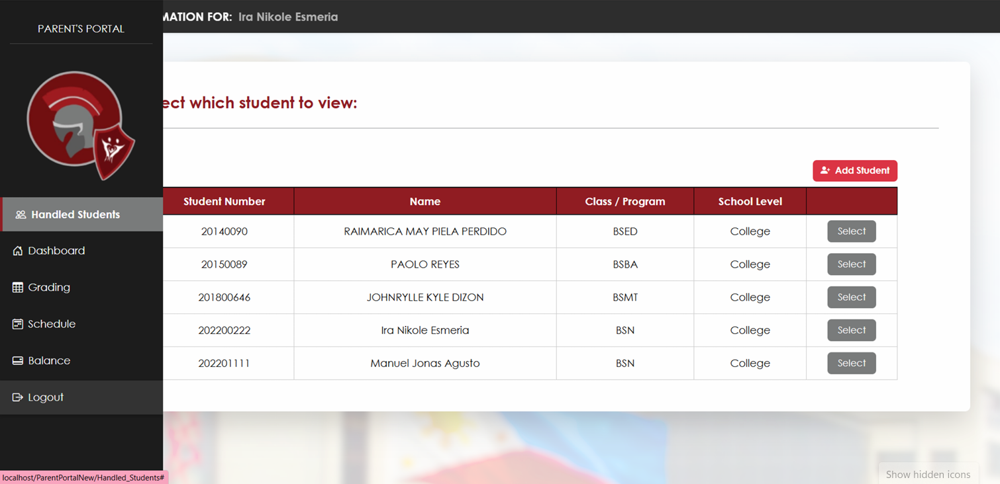
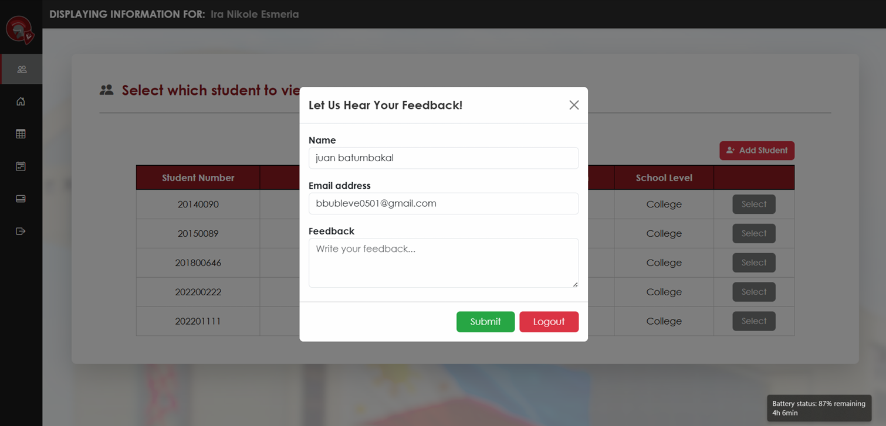

my projects
St. Dominic College of Asia Parent Portal
PHP · CodeIgniter 3 · MySQL · Bootstrap 5 · JavaScript · AJAX · XAMPP · Git · GitHub
The SDCA Parent Portal is a web-based system developed during my OJT at St. Dominic College of Asia (SDCA) to provide parents with access to their children's academic and student-related information. It was my main project during the internship and was developed collaboratively with Vhina May F. Palomar, with both of us handling frontend and backend development.










The Parent Portal provides parents with a centralized platform for viewing and managing information related to their handled students. It includes student information, grades, schedules, enrollment status, academic year and semester, and balance information. The system also supports parent-student assignment and confirmation, notifications, responsive navigation, and integration with existing school systems and APIs. As part of the development team, I worked on both the frontend and backend of several modules. My assigned responsibilities included the sidebar, login backend, Handled Students page, Dashboard, Schedule page, Balance page, and toast notifications. I also worked on database queries and table joins, AJAX/API integration, session checking, responsive layouts, and the connection between the Parent Portal and Student Portal.
Project Information
September 3, 2025
This was the main project assigned to us during our OJT at the ICT Department’s MIS Unit of St. Dominic College of Asia. It was a collaborative full-stack web development project with the MIS Team, where we worked on both the frontend and backend of the Parent Portal.
Team Members & Roles:
- Vanessa Andino
- Vhina May Palomar
- MIS Team
- Sidebar
- Login
- Handled Students page
- Dashboard
- Schedule
- Balance
- Toast notifications
- API/AJAX data retrieval
- Database queries and table joins
- Session checking and page security
- Responsive design and UI improvements
- Git/GitHub collaboration and code integration